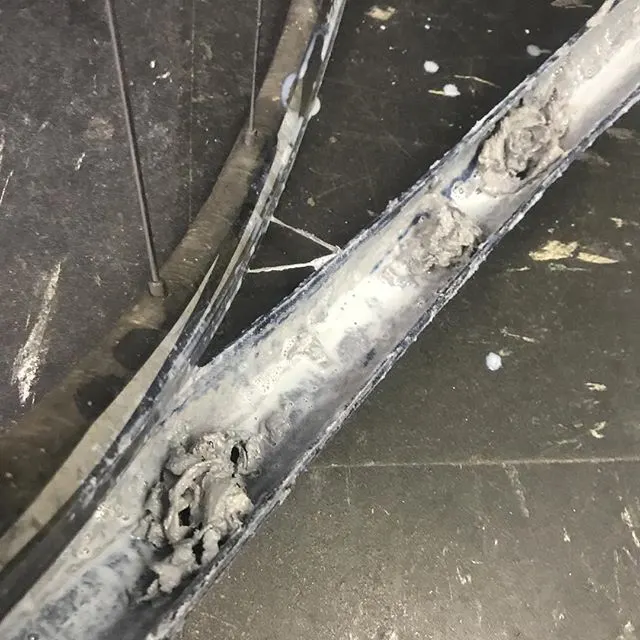

Инструкция · Колёса и шины
Бескамерка: перевод колёс, герметик, посадка борта
Для бескамерки нужны: обод tubeless-ready (или обод, который производитель разрешает переводить лентой), бескамерная лента нужной ширины, бескамерный ниппель, покрышка с маркировкой Tubeless Ready / TLR / TL и герметик. Обычная покрышка без такой маркировки для бескамерки не предназначена. Ниже — общий порядок; детали (объём герметика, давление посадки, максимальное давление обода) берите у производителя обода и покрышки.

⚠ Важно
- Герметик со временем высыхает: обновляйте его по рекомендации производителя (обычно раз в несколько месяцев, в жару — чаще). Остатки и «комки» удаляйте.
- Не смешивайте герметики разных марок без разрешения производителя — некоторые сочетания сворачиваются.
- Работайте в очках при посадке компрессором: борт может сорваться, герметик брызгает.
- Давление на бескрючковых ободьях ограничено (см. статью о совместимости) — никогда не превышайте максимум обода.
Пошагово
- 1Проверьте совместимость: на ободе и покрышке должна быть маркировка tubeless-ready (на ободах может стоять TC или TSS по ISO 5775 — см. совместимость шин и ободьев). Для бескрючковых (hookless) ободьев допускаются только покрышки, разрешённые производителем для hookless.
- 2Снимите покрышку, камеру и старую ленту. Обезжирьте полку обода спиртом — лента на пыльном или жирном ободе не держится.
- 3Наклейте бескамерную ленту: ширина — по внутренней ширине обода (обычно чуть больше, чтобы лента заходила на стенки), начните в 10–15 см от ниппельного отверстия, тяните ленту с натягом и закончите с перекрытием через отверстие. Прогладьте, чтобы не было пузырей и складок.
- 4Проколите ленту над ниппельным отверстием шилом или горячим инструментом, вставьте бескамерный ниппель и затяните гайку от руки.
- 5Наденьте покрышку: один борт полностью, второй — почти полностью (если покрышка направленная — по стрелке). Опустите борта в центральную канавку обода — так последний участок садится легче.
- 6Залейте герметик в количестве, рекомендованном производителем герметика или покрышки: либо в открытый участок покрышки, либо шприцем через ниппель со снятым золотником.
- 7Посадите борта: накачайте резким потоком воздуха — насосом с ресивером («бустером»), компрессором, — при необходимости со снятым золотником. Борта с хлопками встают на полки обода. Не превышайте максимального давления, указанного на ободе и покрышке.
- 8Проверьте посадку: линия над бортом (у многих покрышек есть контрольный рант) должна идти ровно по всей окружности с обеих сторон. Если борт «утонул» в одном месте — спустите, намыльте борт мыльным раствором и накачайте снова.
- 9Вставьте золотник, накачайте до рабочего давления и покрутите колесо, покачивая его в разные стороны, — герметик должен покрыть всю внутреннюю поверхность и борта. Положите колесо на бок на несколько минут, затем на другой бок.
- 10Через несколько часов или на следующий день проверьте давление: небольшая потеря в первые сутки обычна, пока герметик запечатывает поры. Дальше — проверка давления перед каждой поездкой.
Если прокол не затягивается — поставьте жгут; в дороге всегда можно поставить камеру (вынув ниппель).